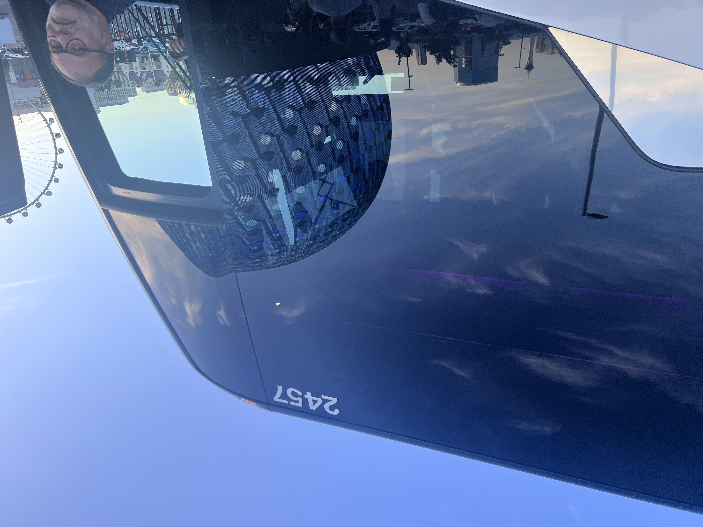
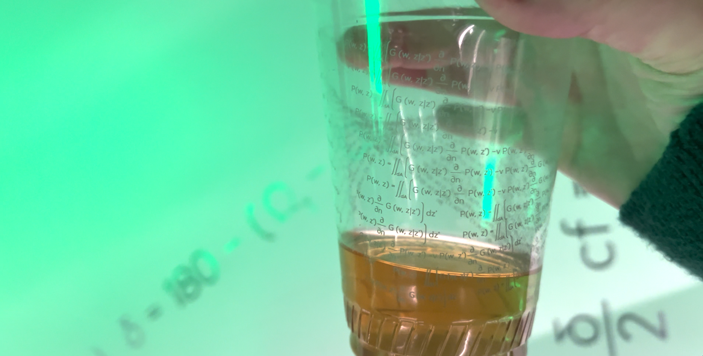
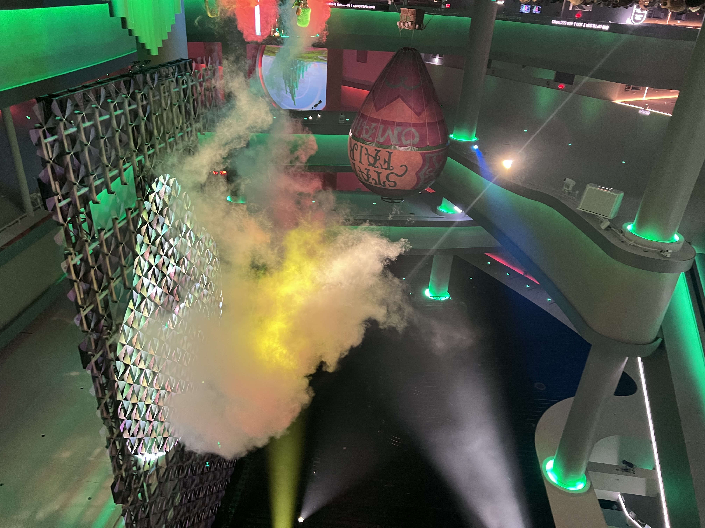
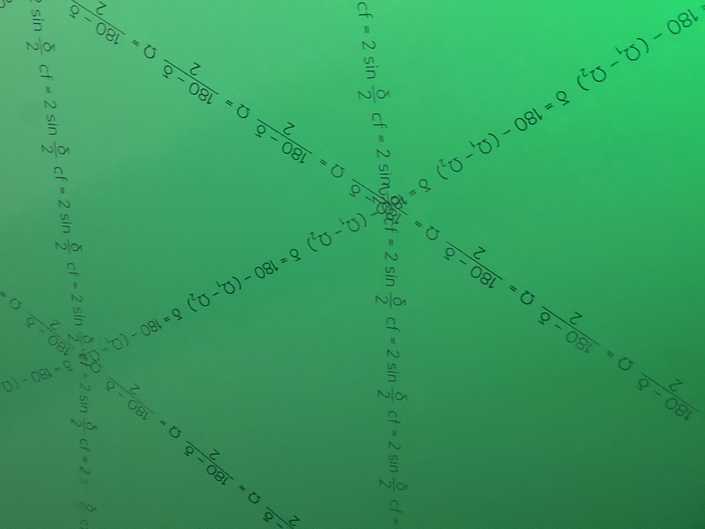
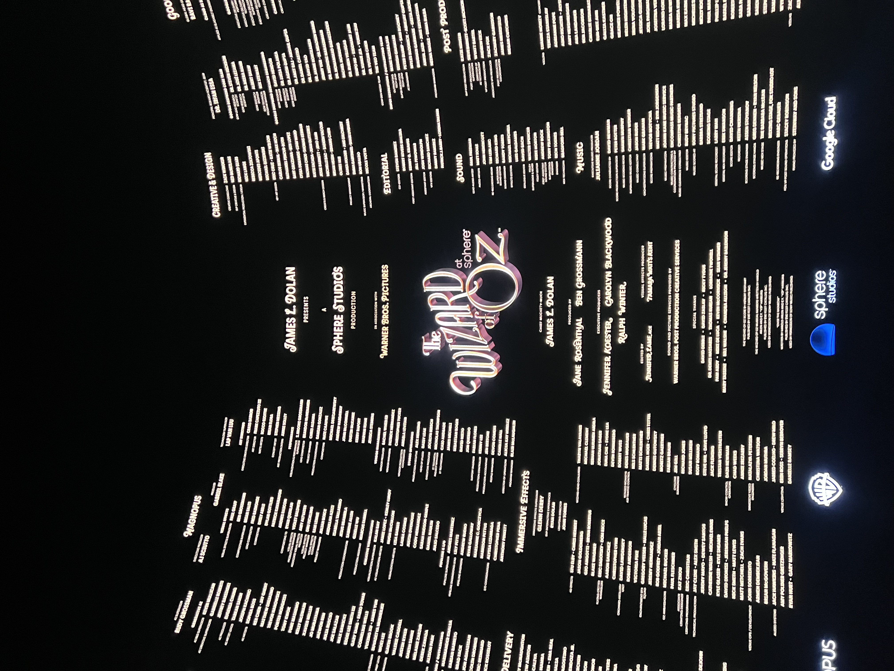
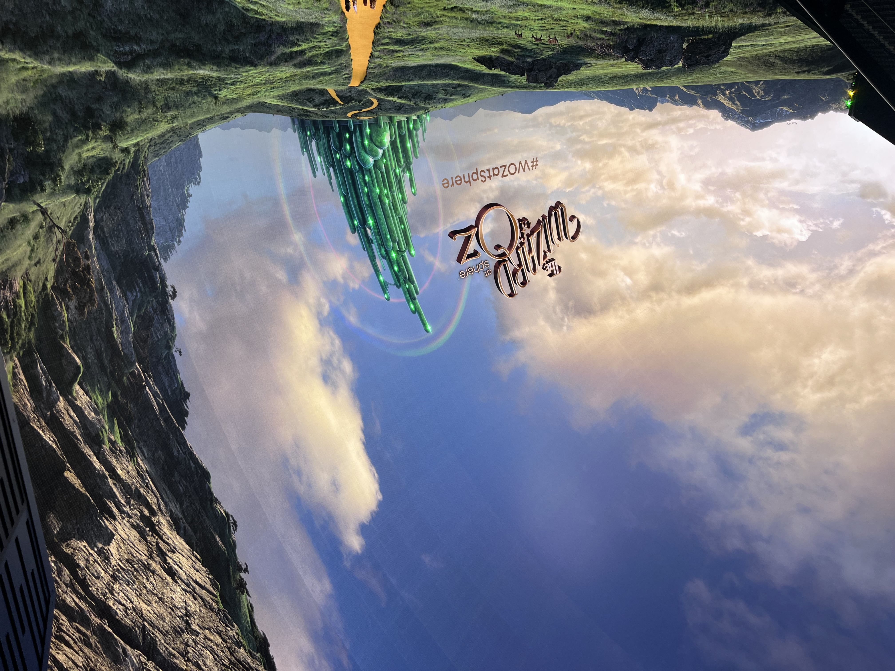

I had the cup with me, the beer cup from the night before. It was filled with water at my spot at the table, while I was in line at the buffet, talking to someone behind me about what I'd seen. The show, the smoke, the thirty foot projection of the wizard in the lobby, and the wizard.... "Can you spell that?"
"Sure, it's H-U-Y-G-E-N-S...""No. No, it's H-U-Y-G-E-N-S."
H4
U1
Y4
TRIPLE WORD SCORE
G2
E1
N1
S1
Christiaan Huygens, 1629–1695
He deserves more recognition than he tends to get. In the history of science, Huygens sits in a peculiar shadow — brilliant enough to correspond with Newton and Leibniz as an equal, yet somehow less famous than either. He built the first pendulum clock. Resonance. He discovered Titan. He described the rings of Saturn correctly when everyone else was wrong. And in 1678, in a treatise presented to the Académie des Sciences in Paris, he described something that would take another two centuries to fully operationalize: the principle that bears his name.

Bus 2457 · approaching the Sphere · Las Vegas
Getting there
Bigger than you imagine. Always.
There's a certain electricity on the bus going there. Almost a formal charge in the air. You talk with the people around you, you're being shipped off into some land of Oz, and there's this almost pink cloud overhead.
And you see it in the bus window before you see it directly. Reflected. Distorted. Already consuming the frame. You have to tilt your head back more than you expect to see the top.
"I always thought of it as more of a public art thing — a way of saying, hey, look what we can do."
Walking toward the entrance, someone mentioned the economics. It was losing money at speed. The concerts were profitable; the everyday shows were not. One hundred dollars a ticket to see a movie is a lot. But I always thought it was more of an art project.
Preshow cocktails
A cup worthy of a $25 drink
There was a cocktail hour. Drink tickets for mixed drinks, beer and wine were free. I ordered a margarita with a ticket. And since I was already at the bar and didn't want to come back, I grabbed a beer too.
That was the accident that changed everything. I saw the beer cup. I saw.

Inside the sphere
The speakers are a wink and nod.
Row 10, seat 6 in the balcony. A great seat. The screen wrapped around, past your peripheral vision in every direction. When you tilted your head and looked around, the edge of the screen was still outside your field of view. There were no gaps. No borders. You could see everything.
On the ceiling, hanging down on each side of the front of the sphere, there were these large speaker rigs — the kind you see at concerts, double-wide, thirty-degree arcs of cabinet clusters. Massive and physical and real-looking.
The crowd
"No way, those are real. Look at them. They look completely real."
What I knew
"They didn't build this billion-dollar engineering masterpiece and then hang speaker boxes in front of that screen."
They were images on the screen. When the show started, the speakers disappeared. Of course they did.
"They're behind the screen. They're smarter than that. It's an engineering masterpiece — on the inside and out."
That was the wink. The fake speakers, shown briefly, then removed. A little joke for anyone paying attention. You thought those were the speakers. They weren't.
"How do you make it seem like the witch is cackling to you, no matter who you are, in a place that's round?"
The principle behind the curtain
Every point on a wavefront is a new source.
Christiaan Huygens, in 1678, described what is now called Huygens' Principle: every point on a propagating wavefront acts as a new, independent source of spherical waves. The envelope of all those secondary waves forms the next wavefront. This is how sound travels. This is how it bends around corners, fills rooms, wraps around heads.
Gustav Kirchhoff formalized it mathematically in 1882. Hermann von Helmholtz gave it the integral form that lets you describe a pressure field on a boundary and reconstruct everything inside. George Green, decades earlier still, had provided the function — the mathematical heart of it — that makes the whole machinery run. These weren't contemporaries working in concert. They were separated by decades, by countries, by the particulars of what each was trying to solve. The science accumulated the way science does: slowly, imperfectly, with long gaps between the insight and the application.
In a spherical space — in the Sphere — this accumulated understanding becomes the entire engineering problem. How do you place sound sources on the boundary of a sphere such that the pressure field at every interior point is exactly what you intend? How do you make the witch's cackle arrive from the right direction for every person, regardless of where they're sitting?
That's not a question you answer with speaker placement intuition. That's a computation. And making it real — taking the boundary integral from a theorem in a nineteenth-century treatise to a live, spatially accurate acoustic field inside a 366-foot sphere — required something more recent: the kind of machine learning and signal processing research that teams at Google and DeepMind have been quietly advancing for years. The Sphere is, in part, a monument to that work. To the researchers who looked at a very old equation and asked what it would take to actually build it.
The answer, it turns out, is on the cup.
Kirchhoff–Helmholtz boundary integral — the equation on the cup
The Kirchhoff–Helmholtz integral says: the pressure at any interior point is entirely determined by the pressure and its normal derivative on the boundary. You don't need speakers everywhere. You need the right speakers, in the right places, with the right signals. The boundary is sufficient. The boundary is the field.
This is what the Sphere is. Not a screen. Not a dome. A boundary condition.

Pay no attention to the writing on the wall.
There was colored smoke. A hot air balloon. A wizard projected thirty feet tall, booming voice, everyone looking up. It was magnificent. It was a really, really good distraction.

The writing on the wall.
The same equations, radiating from a vanishing point. Like an Escher tessellation, there for all to see.
When I came out of the theater into the lobby, I saw it everywhere. The equations from the cup — tiled across the walls in a radiating pattern, spinning out from a central point like spokes, like a tessellation, like an Escher drawing. Mathematically beautiful. Physically present. Completely invisible to the room.
Because the room was looking at the wizard.
The booming head. The smoke filling the lobby. The balloon. The spectacle was enormous and expertly constructed and everyone's eyes were glossed over by it. Nobody stopped to read the writing on the wall.
What the curtain actually is
The science is the wizard. It always was.
Think about what it means to fill a spherical space with sound such that every person, regardless of seat, hears the witch cackle from the right direction. Think about what had to be understood to make that possible without hanging visible hardware in front of a billion-dollar screen.
The answer runs from a Dutch astronomer's 1678 treatise through a German physicist's boundary conditions through a British mathematician's Green's function through decades of signal processing research through the machine learning teams at Google who turned theory into something you can run in real time inside a sphere in the Nevada desert.
That's not one genius. That's a conversation across centuries. And the Sphere is what it sounds like when you finally have enough compute to say everything that conversation was building toward.

Sphere Studios · Warner Bros. · Google Cloud · Immersive Effects: Glenn Derry
The point
What the wizard is made of.
The Wizard of Oz at the Sphere is a quiet invitation. Not a test you pass or fail — just an open door that most people walk past. On one side: the smoke, the balloon, the projection, the booming voice. On the other: the equations on the cup, the tessellation on the wall, the absent speaker rigs, the boundary integral running somewhere in a server rack in an invisible room.
Both sides are real. The spectacle is genuine. The science underneath it is also genuine. The people who built this chose to put the equations on the cups and the formulas on the walls. That wasn't accidental. It is a love letter for the mathematicians, engineers, and researchers who spent years on this problem back to the scientists whose work made it possible. Huygens. Green. Kirchhoff. Helmholtz. And the quieter names in the credits who translated centuries of theory into a real-time acoustic field inside a sphere.
Most people got a movie. Some got an exhibition.
The writing is on the wall. The equations are on the cups. Everything is there, for everyone, the whole time.
· · ·
I came and saw the Wizard. And I was happy to see him. I got a little bit of courage, too. And a cup.

Post-show · #WOZatSphere · The Emerald City reimagined
Some prose in this piece was developed with the assistance of Claude, an AI assistant made by Anthropic. Factual claims — including dates and attributions for Huygens (1629–1695), Kirchhoff (1824–1887), Helmholtz (1821–1894), and George Green (1793–1841) — have been verified against published sources. The Sphere Entertainment Group opened the Sphere in Las Vegas in September 2023. The Wizard of Oz at Sphere is a Sphere Studios production in association with Warner Bros. Pictures, presented by James L. Dolan.